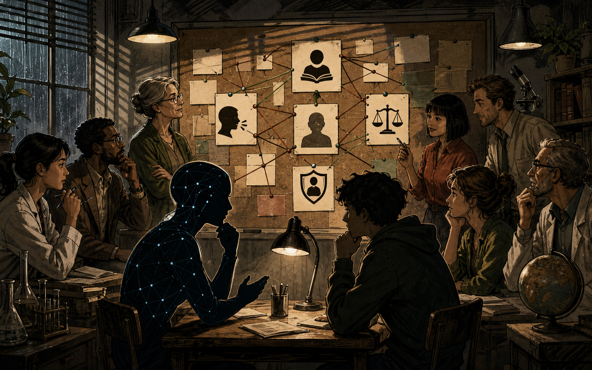
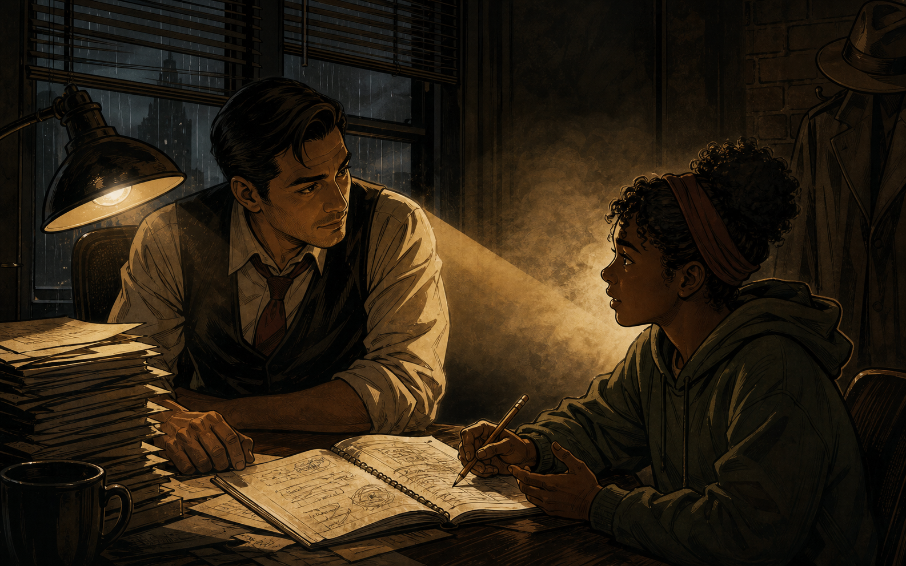
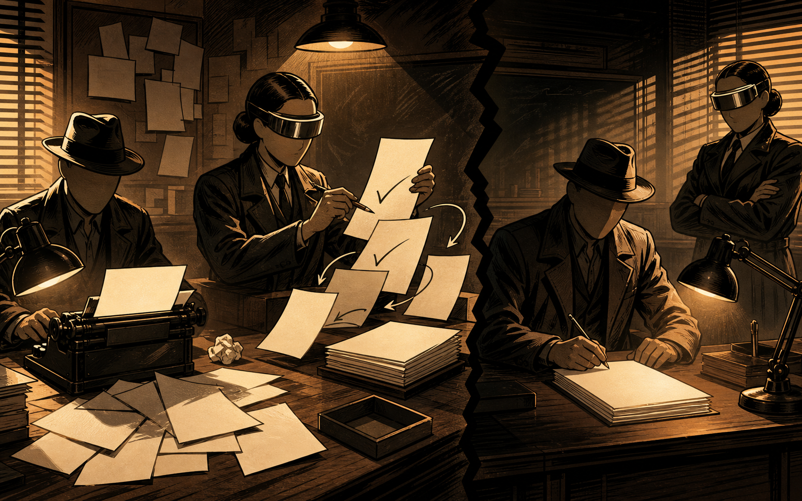
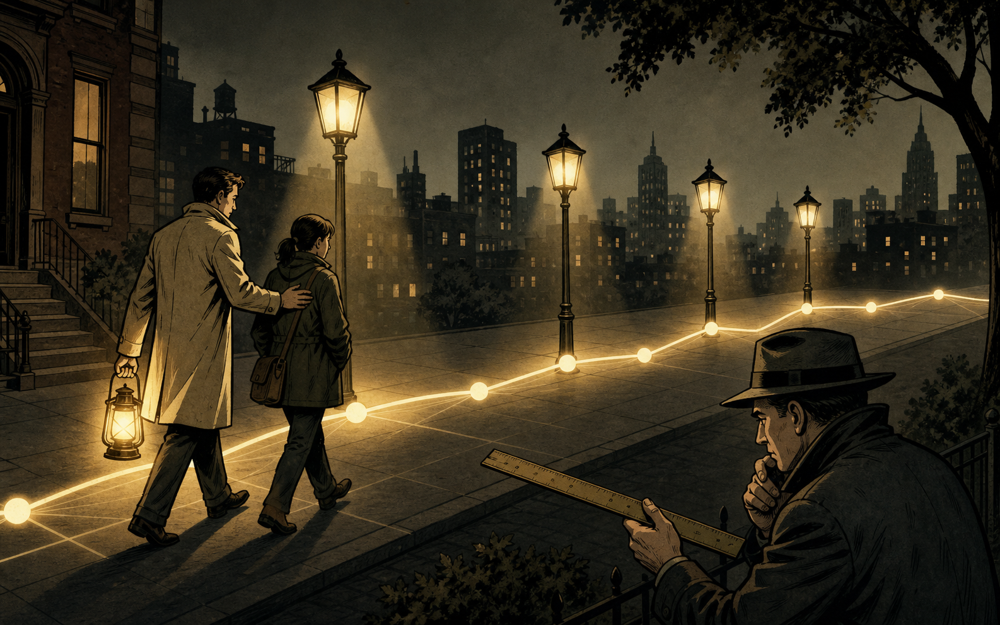
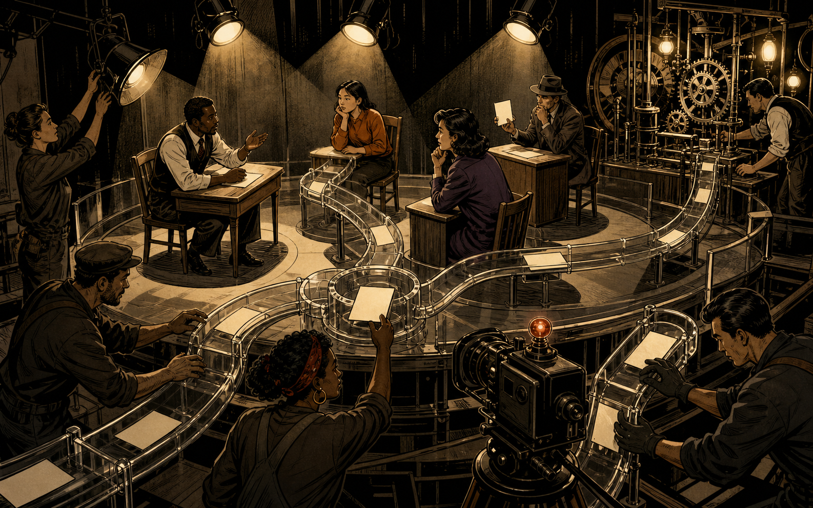
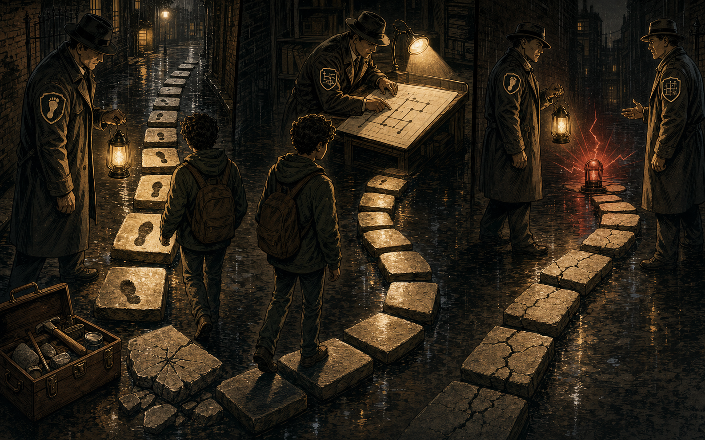
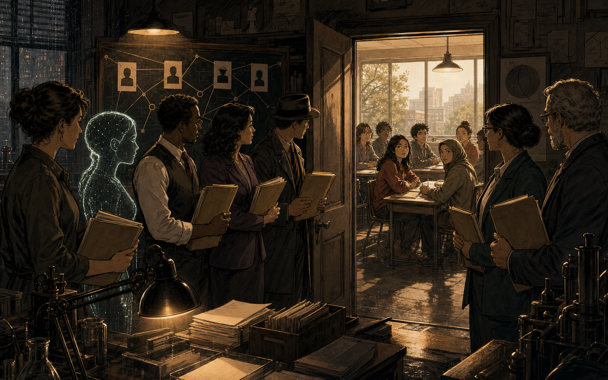
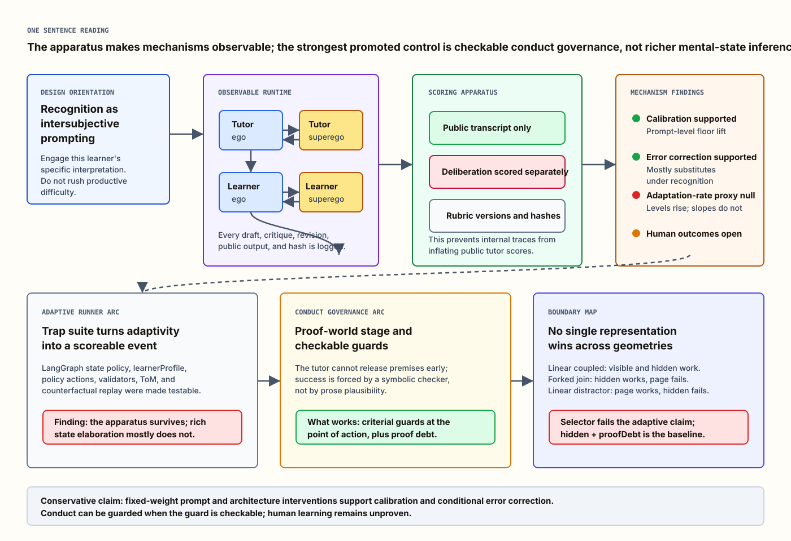
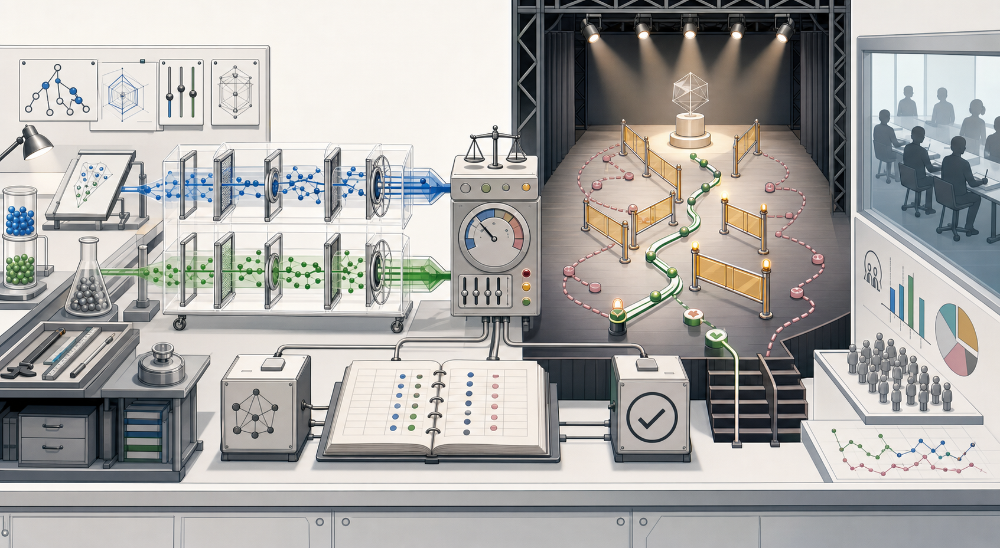

The Case of the Learning Machine
A film-noir comic explainer for Paper 2.0: what made the AI tutor better, what did not, and why the next witness has to be human.
01.
The case
The paper did not find a magic tutor. It found which parts of the machine actually moved.
Paper 2.0 tested a tutor that can draft, criticize itself, revise, and leave a trace of what happened. The question was simple enough for a comic and hard enough for a research program: when the tutor improves, which piece did the work?
The tutor
The system trying to help. In some cells it speaks once; in others it drafts, gets criticized, and revises.
The learner
A simulated learner in the main study. Useful for mechanism tracing, but not a substitute for human learning outcomes.
The apparatus
Judges, traces, rubrics, scenario controls, and proof checkers that keep each claim tied to evidence.
The headline resolves to two supported mechanisms and one clean null: better prompt calibration, conditional error correction, and no reliable average adaptation-rate gain.Paper 2.0 abstract
Critical read The older arc page is a technical notebook for the dramatic-recognition sidecar. This comic is the reader-facing version of the whole current paper, including later conduct-governance findings.
02.
Clue one - calibration
The strongest clue was not a secret module. It was the way the tutor was asked to listen.

Supported general mechanism
Across the tested models and judges, recognition-oriented prompting produced large tutor-output gains and reduced within-response variance. The paper now frames the active ingredient as an intersubjective-pedagogy orientation, not magic words from Hegel.
Plain version The tutor got better when the prompt treated the learner as a thinking partner rather than a container for answers.
03.
Clue two - the critic
The inner critic helped most when the first draft had something left to catch.

Supported, but conditional substitution
The superego added about 9-15 points under baseline conditions, then lost marginal value under recognition-oriented prompting. The paper names this universal substitution: prompt calibration and architectural critique catch overlapping failures.
Cost lesson On stronger models, a single recognition-oriented tutor may be the better cost-quality trade-off. The multi-agent critic is most valuable when the first draft still has real error headroom.
04.
The false lead
The tutor often started better. It did not reliably get better faster across the dialogue.

Null do not rescue
The primary N=432 trajectory tests were null, and a small exploratory disengagement effect did not survive pre-registered replication. The honest claim is not "no rich adaptation exists." It is narrower: these fixed-weight prompt and architecture interventions did not move the measured slope proxy.
Noir rule A false lead still teaches you something. Here it forced the paper to distinguish a better opening move from a reliably changing relationship.
05.
The lab as witness
The transferable contribution is the apparatus: a way to make mechanism claims auditable.

Process tracing turns "the tutor improved" into smaller questions: what did the prompt constrain, what did the critic catch, what changed in the revision, and what did judges see in the public output?
These are LLM-judged findings about synthetic-learner dialogues. They are strong evidence about tutor production, but they are not yet evidence that people learn more.
Reviewer-proofing The paper's best discipline is not treating generated deliberation as a mind. It treats it as designed, inspectable text moving through a controlled system.
06.
The later case
When the question moved from reading minds to governing conduct, the reliable lever became checkable timing.

Bounded positive no universal guard
On a linear proof chain, a page-only guard matched the hidden proof-state guard. On a forked world, the page-only guard failed where the hidden guard grounded. On a distractor world, the channels swapped. The production arm is hidden plus proofDebt, but the paper keeps the stronger lesson: the right signal depends on the world's geometry.
Plain version Sometimes the page tells you enough. Sometimes it lies. Sometimes the hidden map overcorrects. The guard must match the task, not the other way round.
07.
The open door
The next witness is not another synthetic learner. It is a person.

Recognition-oriented, intersubjective prompting calibrates tutor output across the tested model and judge panel.
Draft-critique-revise architecture corrects errors conditionally, with strongest value when baseline drafts leave error headroom.
Conduct governance can work when external guards enforce checkable timing, but visible and hidden channels are each task-bound.
Whether better tutor production yields better human learning remains the outstanding validation step.
Human boundary The pilot infrastructure exists in the repo, but recruitment and real learner evidence remain gated by consent, real item content, and IRB-ready materials.
08.
The evidence desk
For readers who want the machinery, the diagrams keep the comic honest.
This section reuses the deterministic architecture atlas from the technical arc. The comic panels carry the story; these diagrams carry the exact structure.


Open Mermaid mechanism diagrams
Traceability New claims belong in the canonical paper first. This comic only reframes claims already present in docs/research/paper-full-2.0.md v3.0.163.